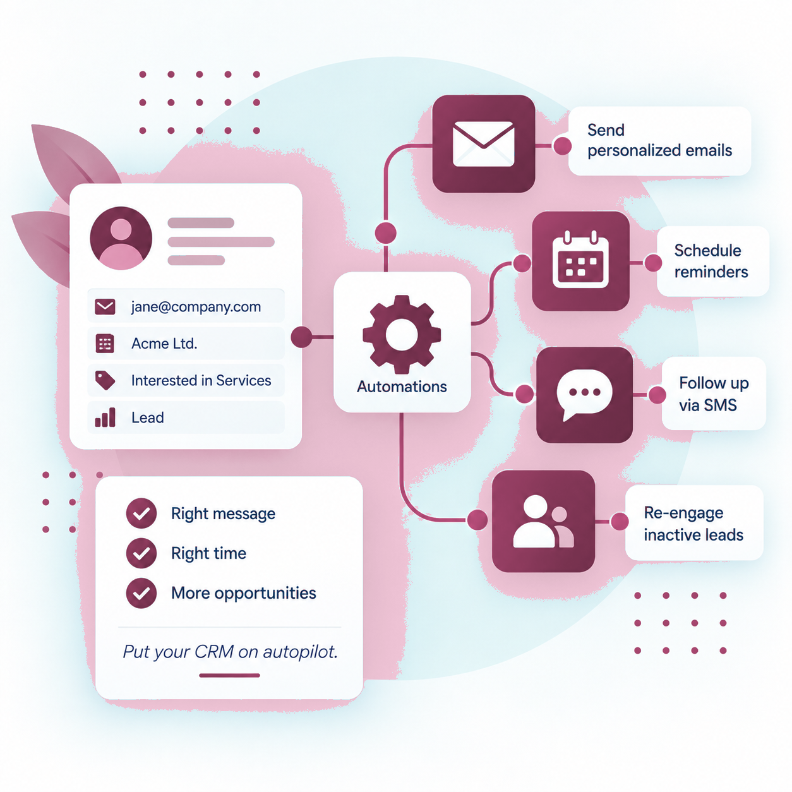
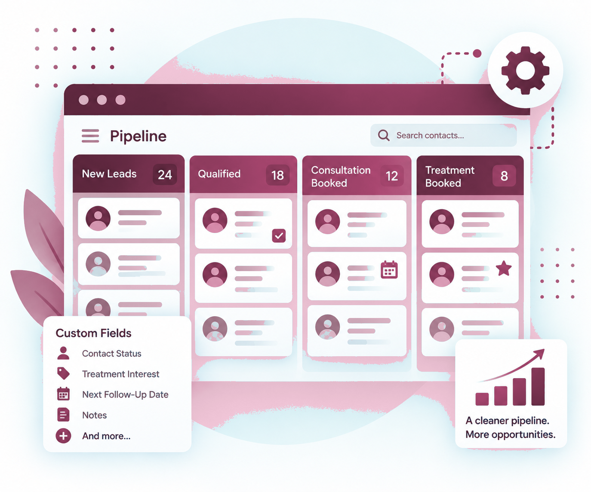
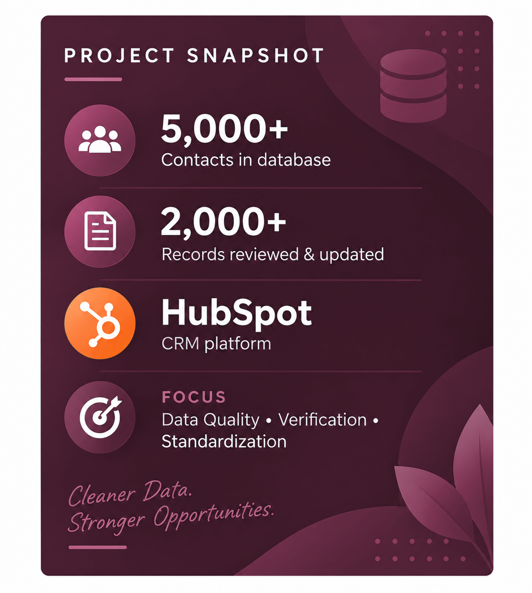
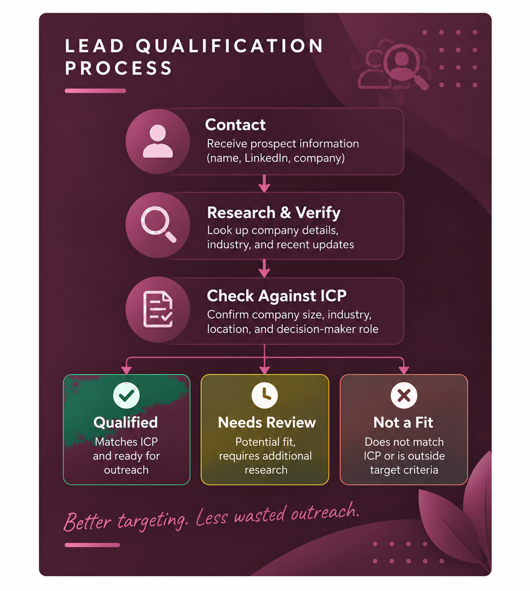

Outdated Data
Not sure which records you can trust?
Duplicate contacts, incomplete information, old job details, and inconsistent fields make it difficult to know what’s accurate and what needs updating.
I audit and rebuild messy CRM databases so businesses can trust their data, recover missed opportunities, and create reliable follow-up systems.
Your CRM has plenty of contacts—but can you trust the data, see what needs attention, and know what should happen next?
Duplicate contacts, incomplete information, old job details, and inconsistent fields make it difficult to know what’s accurate and what needs updating.
Leads are sitting in the CRM, but it’s unclear who followed up, what happened last, or what the next step should be.
Follow-ups get forgotten, promising contacts go cold, and your team ends up relying on spreadsheets, manual checks, or memory to keep things moving.
That’s where I come in.
Practical support that makes your CRM cleaner, clearer, and easier to use.
Identify outdated, incomplete, duplicate, and incorrectly categorized records so you know what needs fixing.

Review and organize contacts using clear qualification criteria, statuses, and data standards.

Create cleaner stages, statuses, fields, and processes so contacts move through your CRM consistently.

Build practical workflows for lead follow-up, reminders, reactivation, and repetitive CRM tasks.
A look at how I’ve helped businesses clean up CRM data and improve lead qualification.

A large CRM database contained incomplete location data, outdated employment information, and inconsistent records—making segmentation, compliance, and future outreach less reliable.
I reviewed and verified contact records using LinkedIn and available company information, corrected Country/Region data, identified contacts who had left their companies, and standardized records using clear data-quality rules.
A cleaner, more reliable CRM with standardized data and clearer visibility into outdated records—giving the team greater confidence in segmentation, compliance, and future outreach.

A prospect database contained contacts and companies that needed further review before outreach. Job titles and company names alone weren’t enough to determine whether each contact genuinely matched the client’s target market.
I researched contacts and companies using LinkedIn and available business information, verified company relevance, checked decision-maker roles against defined qualification criteria, and categorized contacts as Qualified, Needs Review, or Not a Fit.
A more focused prospect database with clearer qualification decisions—helping the team prioritize relevant opportunities and spend less time reviewing unsuitable leads.
Fix the foundation first. Automate what makes sense second.
I review your CRM structure, contact data, statuses, pipelines, and current follow-up process to understand what’s working and what’s getting in the way.
I clean and standardize your data, identify records that need review, and create clearer categories and statuses.
I improve the CRM structure, pipelines, fields, and follow-up process so your team has a clear system to work from.
Where it makes sense, I build practical automations that reduce repetitive work and keep leads and clients from slipping through the cracks.
I help businesses bring order to messy CRM data, unclear processes, and inconsistent follow-up.
My background in operations, lead management, database maintenance, research, and marketing has shown me how quickly messy data and unclear processes can cost a team time and opportunities.
Today, I focus on CRM operations: cleaning and organizing data, improving how contacts and opportunities are tracked, and building practical follow-up systems that are easier for teams to manage.
Understand the process first. Clean and organize what’s already there. Then automate where it genuinely makes sense.
Dealing with messy data, unclear follow-up, or a CRM that just isn’t working the way it should? Tell me a little about what’s happening and what you’d like help with.
Prefer email? hellojanicecrm@gmail.com